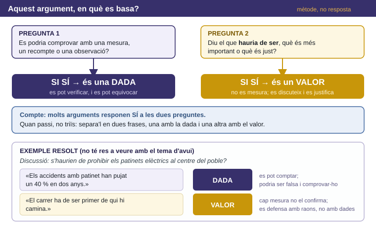
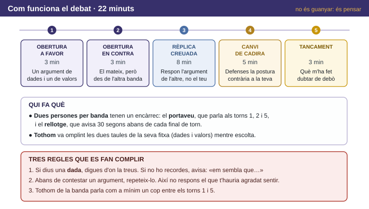
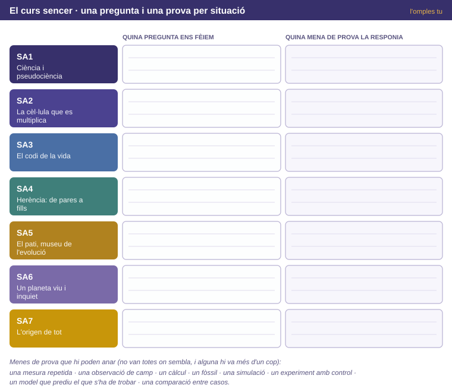

✕
📚 Paraules d'avui
Qüestió sociocientífica: pregunta que barreja ciència i decisió social i que, per tant, no es resol només amb dades. · Dada: afirmació que es podria comprovar i que, per tant, també es podria demostrar falsa. · Valor: afirmació sobre què hauria de ser o què és just; no es mesura, però es justifica amb raons. · Objecció: argument en contra del teu. · Perfil epistèmic: la mena de raons amb què et conformes per creure't una cosa. · Assaig argumentatiu: text on defenses una postura amb raons ordenades i que inclou l'objecció més forta i la teva resposta. · Situació-problema: cas nou, amb dades, on tries tu quines eines hi van.
Hauríem d'invertir diners públics a buscar vida fora de la Terra? Postura en una frase i, a sota, quina dada concreta et faria canviar d'opinió.

Fig.1 · Les dues preguntes. L'exemple resolt és d'un altre tema expressament.
1a. Passa els quatre arguments que portes de casa per les dues preguntes de la Fig.1. Si no en portes, o si no et serveixen per a la banda que t'han assignat, escriu-ne de nous (al peu de l'apartat hi ha tres arguments de reserva que pots fer servir de punt de partida). A la darrera columna no n'hi ha prou amb la lletra: escriu quina comprovació faria falta (si és dada) o quin principi hi ha al darrere (si és valor).
| A favor o en contra | L'argument | D / V / D+V — i què el sostindria |
|---|
| | |
| | |
| | |
| | |
1b. Tria l'argument més barrejat que tinguis i parteix-lo en les dues frases que hi ha amagades a dins.
| Només la dada | Només el valor |
|---|
| |
✕
⚡ Repte
Ara la pregunta incòmoda: si aquella dada resultés ser falsa, l'argument cauria del tot o continuaria dret gràcies a l'altra meitat? Respon-ho i, sobretot, digues què et diu la resposta sobre quina de les dues meitats fa la feina de veritat.
1c. El docent t'ha assignat una banda, que pot no coincidir amb el que penses. Escriu els dos arguments amb què obriràs (un de dades i un de valors) i, al costat de cada un, l'objecció que esperes rebre.
✕
📦 Arguments de reserva (només si no en portes cap; són punts de partida, no els pots dir tal qual):
(1) els diners públics per a recerca són limitats i cada euro que va a una missió no va a una altra cosa;
(2) saber si la vida és freqüent o excepcional canviaria com ens veiem a nosaltres mateixos;
(3) les missions espacials han donat aparells i coneixements que ara fem servir per a coses d'aquí. De cadascun n'has de dir si és dada, valor o les dues coses, i buscar-hi tu la part que li falta.
✕
🗣️ Es demostra a l'aula. Els arguments es defensen parlant, no llegint. Cap dada sense font: si no la recordes, digues-ho abans de dir-la.

Fig.2 · Els cinc torns, les feines de l'equip i les tres regles.
2a. Full de dades. A la teva banda hi ha dos encàrrecs (portaveu i rellotge); les taules d'escolta les omple tothom. Anota les dades que se citin, de qualsevol de les dues bandes, amb la font i amb el teu judici sobre si aguanten.
| La dada | Font citada | Aguanta? Per què |
|---|
| | |
| | |
| | |
2b. Full de valors. Els valors gairebé mai no es diuen amb aquesta paraula: s'endevinen. Anota'ls.
| El valor que hi ha al darrere | La frase on l'has vist |
|---|
| |
| |
| |
✕
⚡ Repte
Torn 4 · canvi de cadira. No val dir el que et sembla que dirien els altres. Construïx la versió més forta possible de la postura contrària — la que a tu et costaria més de respondre — i, tot seguit, escriu com la respondries si tornessis a la teva cadira. Si la teva resposta et surt fluixa, ho has fet bé.
| La versió forta de la postura contrària | La meva resposta, des de la meva cadira |
|---|
| |
2c. Torn 5 · tancament. Què t'ha fet dubtar de debò? Digues si era una dada o un valor i què has fet amb aquell dubte.

Fig.3 · Una fila per situació. La llista de menes de prova de sota no està ordenada: alguna es repeteix i alguna no va enlloc.
3a. Omple el mapa de la Fig.3: per a cada situació, la pregunta que ens fèiem i la mena de prova que la responia.
✕
⚡ Repte
Amb el mapa ple: busca la situació on la prova era més indirecta de totes — on el que afirmem queda més lluny del que hem pogut observar de debò — i explica per què, tot i això, la conclusió es continua sostenint. Si et queda temps: busca dues situacions que facin servir la mateixa mena de prova per a coses que no s'assemblen gens.
3b. A la primera sessió del curs vas dir amb quina mena de garantia et conformaves per creure't una cosa (les cinc que vàrem posar: ho diu algú que en sap · hi ha dades · encaixa amb un model que ja funciona · sempre s'ha dit · ho diu la gent com jo). Amb quina et conformaves al setembre i amb quina et conformes ara? Posa un exemple de cada moment.
3c. Una idea que has canviat durant el curs, i què t'ho va fer canviar.
3d. (si no hi ha temps, s'acaba a casa) Argumenta com el coneixement obtingut mirant altres planetes ha canviat la manera de cuidar aquest. Posa-hi un cas concret i, després, digues fins on arriba aquest argument: què no demostra.
✕
📄 La prova va en un full independent. Situació-problema nova amb sis preguntes que travessen situacions diferents del curs. Tens
5 minuts per llegir-la i 45 per respondre. No es puntua: es mira, per a cada objectiu, fins on has arribat. Val per a totes sis:
justifica cada pas amb la dada concreta en què et bases, i si una cosa no es pot decidir amb el que et donen, escriu-ho i digues què faria falta per decidir-ho.
✕
⚡ Repte
Quan acabis, torna enrere i tria la pregunta de què t'has quedat menys segur. Escriu al marge quina dada concreta t'hauria fet falta per estar-ne segur, o quin pas del teu raonament és el que et fa dubtar. Això no baixa la valoració: assenyalar on s'acaba el que saps és part del que s'avalua.
Torna a la frase de l'apartat 0. Continua sent la teva? Explica què l'ha moguda o què l'ha aguantada.
Què t'endús d'aquesta matèria que et servirà encara que no tornis a estudiar biologia mai més?
Escriu una afirmació que al setembre t'hauries cregut sense comprovar-la i que ara no et creuries sense comprovar-la. Digues com la comprovaries.
Quina pregunta te'n vas sense respondre? Escriu-la bé: és la que et durà a la següent.
✕
🏠 Producte final de la situació
1
Assaig argumentatiu individual, un full, al Classroom durant la setmana següent, amb els teus fulls de dades i de valors al davant.
2
Postura · un argument de dades amb la font · un argument de valors dit com a tal · la millor objecció que vas sentir, escrita amb honestedat · la teva resposta.
3
Última frase, obligatòria: quina dada et faria canviar d'opinió. Si concloguessis que no n'hi ha cap de possible, digues què vol dir això de la teva postura.
Adaptat per Albert Pahissa de l'original de Jordi Domènech. Llicència
CC BY-NC-SA 4.0 (Reconeixement–NoComercial–CompartirIgual).